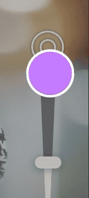

EaseIn

*EaseOut*
UIView.animate(withDuration: 0.25,
delay: 0,
options: [],
animations: {
}, completion: nil)bounds
frame
center
backgroundColor
alpha
transform
frame: 当前相对父视图的坐标系的位置和大小
bounds：自身坐标系的位置和大小，觉得subViews的frame
transform 变换（位移动，缩放，旋转），transform改变时，会影响frame，不会影响bounds
UIView.animate(withDuration: 0.5, delay: 0.4,
options: .repeat,
animations: {
self.password.center.x += self.view.bounds.width
},
completion: nil
)Animation easing
curveLinear: 匀速动画
.curveEaseIn: 动画开始时加速
.curveEaseOut: 动画结束时，减速
.curveEaseInOut: 动画开始时加速， 减速
UIView.animate(withDuration: 0.5,
delay: 0.5,
usingSpringWithDamping: 0.5,
initialSpringVelocity: 0.0,
options: [],
animations: {
self.loginButton.center.y -= 30.0
self.loginButton.alpha = 1.0
}, completion: nil)usingSpringWithDamping: 取值在 0 ~ 1.0，值越大，弹簧的刚度越大
initialSpringVelocity: 控制动画的初始速度。 值1.0设置动画的速度以覆盖动画的总距离（在一秒的跨度内）。 较大和较小的值将导致动画具有或多或少的速度。
用于转场的动画Options
.transitionFlipFromLeft
.transitionFlipFromRight
.transitionCurlUp
.transitionCurlDown
.transitionCrossDissolve
.transitionFlipFromTop
.transitionFlipFromBottom
添加View时
UIView.transition(with: animationContainerView,
duration: 0.33,
options: [.curveEaseOut, .transitionFlipFromBottom],
animations: {
self.animationContainerView.addSubview(newView)
},
completion: nil
)移除View时
UIView.transition(with: animationContainerView,
duration: 0.33,
options: [.curveEaseOut, .transitionFlipFromBottom],
animations: {
self.newView.removeFromSuperview()
},
completion: nil
)隐藏或显示View时
UIView.transition(with: self.newView,
duration: 0.33,
options: [.curveEaseOut, .transitionFlipFromBottom],
animations: {
self.newView.isHidden = true
},
completion: nil
)替换View时
UIView.transition(from: oldView,
to: newView,
duration: 0.33,
options:
.transitionFlipFromTop,
completion: nil) UIView.animateKeyframes(withDuration: 1.5, delay: 0.0, animations: {
//add keyframes
UIView.addKeyframe(withRelativeStartTime: 0.0, relativeDuration: 0.25, animations: {
self.planeImage.center.x += 80.0
self.planeImage.center.y -= 10.0
})
UIView.addKeyframe(withRelativeStartTime: 0.1, relativeDuration: 0.4) {
self.planeImage.transform = CGAffineTransform(rotationAngle: -.pi / 8)
}
UIView.addKeyframe(withRelativeStartTime: 0.25, relativeDuration: 0.25) {
self.planeImage.center.x += 100.0
self.planeImage.center.y -= 50.0
self.planeImage.alpha = 0.0
}
UIView.addKeyframe(withRelativeStartTime: 0.51, relativeDuration: 0.01) {
self.planeImage.transform = .identity
self.planeImage.center = CGPoint(x: 0.0, y: originalCenter.y)
}
UIView.addKeyframe(withRelativeStartTime: 0.55, relativeDuration: 0.45) {
self.planeImage.alpha = 1.0
self.planeImage.center = originalCenter
}
}, completion: nil)layer与View（就动画而言）不同，原因如下：
图层是模型对象–它公开数据属性并且不实现任何逻辑。 它没有复杂的自动版式依赖性，也没有处理用户交互。
它具有预定义的可见特征-这些特征是许多数据属性，它们会影响内容在屏幕上的呈现方式，例如边界线，边界颜色，位置和阴影。（预先会绘制一个layer）
Core Animation直接在GPU上优化了图层内容的缓存和快速绘制。
视图布局，层级复杂
存在用户用户交互
通常具有在CPU的主线程上执行的自定义逻辑或自定义绘图代码
非常灵活，强大，有很多子类可以继承
层次结构简单，布局解析速度快，绘制速度快。
没有响应者链开销。
默认情况下没有自定义逻辑。 并直接在GPU上绘制。
不够灵活，子类继承较少
设置Layer动画时，控件本身本身不具有动画效果，当动画开始时，预先渲染的动画layer（presentation layer）将会替代控件，同时控件暂时隐藏，动画过程中不能交互
动画完成后 presentation layer 将从屏幕上删除，原始Layer再次显示自己。（动画结束需要更新layer的属性值为动画结束时的值）
bounds
postion: position.x position.y
transform :transform.scale(x, y, z), transform.roate(x, y, z)
border: boorderWidth, backroudClolor, borderColor, corner
shadow: shadowOffset, shadowOpacity, shadowPath, shadowRadius
contents
mask
opacity
path
strokeEnd
strokeStart
let flyRight = CABasicAnimation(keyPath: "position.x")
flyRight.fromValue = -view.bounds.size.width / 2
flyRight.toValue = view.bounds.size.width / 2
flyRight.fillMode = .forwardsanchorPoint(锚点): 视图的几何操作（旋转，平移，缩放）的中心，
position 是相对layer的anchoorPoint 相对于superLayer的位置，即View的center
postion.x = frame.origin.x + anchorPont.x * frame.width
postion.y = frame.origin.y + anchorPont.y * frame.heightframe 当前layer相对superLayer的位置和大小, 最终由View体现
frame.x = postion.x - anchorPont.x * frame.width
frame.y = postion.y - anchorPont.y * frame.heightbounds 当layer自身的坐标系的位置和大小
forwards: 动画结束停留在最后一帧
backwards：动画开始前，处于动画的第一帧
both：结合了forwards与backwards的特点，即动画开始前，处于动画的第一帧，动画结束停留在最后一帧
removed：动画结束，移除动画
let groupAnimation = CAAnimationGroup()
groupAnimation.beginTime = CACurrentMediaTime() + 0.5
groupAnimation.duration = 0.5
groupAnimation.fillMode = .backwards
group.timingFunction = CAMediaTimingFunction(name: .easeInEaseOut)let scaleDown = CABasicAnimation(keyPath: "transform.scale")s
caleDown.fromValue = 3.5
scaleDown.toValue = 1.0
let rotate = CABasicAnimation(keyPath: "transform.rotation")
rotate.fromValue = .pi / 4.0
rotate.toValue = 0.0
let fade = CABasicAnimation(keyPath: "opacity")fade.fromValue = 0.0
fade.toValue = 1.0
groupAnimation.animations = [scaleDown, rotate, fade]EaseIn
*EaseOut*


Repeating animations
flyLeft.repeatCount = 4
flyLeft.autoreverses = trueChange the animation speed
flyLeft.speed = 2.0damping: 阻尼系数， 阻止弹簧伸缩的系数，阻尼系数越大，停止越快
mass: 运动的质量，影响图层运动时的弹簧惯性，质量越大，弹簧拉伸和压缩的幅度越大, 默认为1.0
stiffness: 刚度，默认为100，为正，为0时，弹性越软，值越大，弹性越硬
initialVelocity： 初始的速度，速率为正数时，速度方向与运动方向一致，速率为负数时，速度方向与运动方向相反
settlingDuration 估算时间 返回弹簧动画到停止时的估算时间，根据当前的动画参数估算
let jump = CASpringAnimation(keyPath: "position.y")
jump.initialVelocity = 100.0
jump.mass = 10.0
jump.stiffness = 1500.0
jump.damping = 50.0
jump.fromValue = textField.layer.position.y + 1.0
jump.toValue = textField.layer.position.y
jump.duration = jump.settlingDuration
let flash = CASpringAnimation(keyPath: "borderColor")
flash.damping = 7.0
flash.stiffness = 200.0
flash.fromValue = UIColor(red: 1.0, green: 0.27, blue: 0.0, alpha:
1.0).cgColor
flash.toValue = UIColor.white.cgColor
flash.duration = flash.settlingDuration
textField.layer.add(flash, forKey: nil)values： 动画的值
path：动画的路径
keyTimes：帧时长
timingFunctions：帧时间函数
calculationMode: 帧计算模式
let wobble = CAKeyframeAnimation(keyPath: "transform.rotation")
wobble.duration = 0.25
wobble.repeatCount = 4
wobble.values = [0.0, -.pi/4.0, 0.0, .pi/4.0, 0.0]
wobble.keyTimes = [0.0, 0.25, 0.5, 0.75, 1.0]
heading.layer.add(wobble, forKey: nil)
/// 矩形变为圆形动画
fileprivate func circularAnimations() {
let groupAnimation = CAAnimationGroup()
groupAnimation.beginTime = CACurrentMediaTime()
groupAnimation.duration = 0.1
groupAnimation.fillMode = "forwards"
groupAnimation.isRemovedOnCompletion = false
let bounds = CABasicAnimation(keyPath: "bounds")
bounds.fromValue = gradientLayer.bounds
bounds.toValue = layerBoundsInView
let cornerRadius = CABasicAnimation(keyPath: "cornerRadius")
cornerRadius.timingFunction = CAMediaTimingFunction(name: "linear")
cornerRadius.fromValue = 8
cornerRadius.toValue = UISize.btnHeight * 0.5
groupAnimation.animations = [bounds, cornerRadius]
gradientLayer.add(groupAnimation, forKey: "group")
} /// 打钩画，
/// 1.绘制出勾勾的路径
/// 2.用shapelayer的strokeEnd做动画
func showAnimation() {
shapelayer.strokeEnd = 1
let group = CAAnimationGroup()
group.duration = 0.25
group.isRemovedOnCompletion = false
group.fillMode = .forwards
group.timingFunction = CAMediaTimingFunction(name: .easeInEaseOut)
let strokeEnd = CABasicAnimation(keyPath: "strokeEnd")
strokeEnd.fromValue = 0
strokeEnd.toValue = 1
strokeEnd.duration = 0.25
strokeEnd.timingFunction = CAMediaTimingFunction(name: .easeInEaseOut)
let scale = CABasicAnimation(keyPath: "transform.scale")
scale.fromValue = 1
scale.toValue = 1.2
scale.fillMode = .forwards
scale.isRemovedOnCompletion = false
scale.duration = 0.1
group.animations = [strokeEnd]
shapelayer.add(group, forKey: nil)
scale.beginTime = CACurrentMediaTime() + 0.25
scale.fromValue = 1
scale.toValue = 0.9
scale.timingFunction = CAMediaTimingFunction(name: .easeInEaseOut)
shapelayer.add(scale, forKey: nil)
}/// 呼吸动画
func showAniamtion() {
let scale = CAKeyframeAnimation(keyPath: "transform.scale")
scale.repeatCount = MAXFLOAT
scale.values = [1, 1.3, 1]
scale.keyTimes = [0, 0.5, 1]
scale.duration = 1.5
scale.beginTime = 0.25
layer.add(scale, forKey: "scale")
}
/// 圈圈的出现动画
func show() {
let group = CAAnimationGroup()
group.timingFunction = CAMediaTimingFunction(name: "easeInEaseOut")
group.fillMode = "backwards"
group.isRemovedOnCompletion = false
group.setValue("show", forKey: "name")
group.delegate = self
group.duration = 0.3
let scale = CAKeyframeAnimation(keyPath: "transform.scale")
scale.values = [0, 1.5, 1]
scale.duration = 0.3
scale.calculationMode = "linear"
let opacity = CABasicAnimation(keyPath: "opacity")
opacity.fromValue = 0
opacity.toValue = 1
opacity.duration = 0.3
group.animations = [scale, opacity]
dot1.layer.add(group, forKey: nil)
}
/// 圈圈的消失动画
func endShow(_ dotType: DotType = .double,
completion: ((Bool) -> Void)? = nil) {
let dismissGroup = CAAnimationGroup()
dismissGroup.timingFunction = CAMediaTimingFunction(name: "linear")
dismissGroup.fillMode = "forwards"
dismissGroup.isRemovedOnCompletion = false
dismissGroup.duration = 0.15
dismissGroup.delegate = self
dismissGroup.setValue("dismissGroup", forKey: "name")
let dismissOpacity = CABasicAnimation(keyPath: "opacity")
dismissOpacity.fromValue = 1
dismissOpacity.toValue = 0
let scale = CABasicAnimation(keyPath: "transform.scale")
scale.fromValue = 1
scale.toValue = 1.5
dismissGroup.animations = [scale, dismissOpacity]
self.animationCompletion = completion
dot1.layer.add(dismissGroup, forKey: nil)
} /// 切换layer动画
fileprivate func exchangeSuperLayer() {
let gradientBounds = gradientLayer.convert(gradientLayer.bounds, to: self.layer)
gradientLayer.removeFromSuperlayer()
bottomShadowLayer.removeFromSuperlayer()
CATransaction.begin()
CATransaction.setDisableActions(true)
gradientLayer.frame = gradientBounds
CATransaction.commit()
layer.addSublayer(gradientLayer)
layerBoundsInView = CGRect(x: gradientBounds.origin.x + gradientBounds.width/2 - UISize.btnHeight * 0.5, y: gradientBounds.origin.y, width: UISize.btnHeight, height: UISize.btnHeight)
}
/// 曲线移动动画
fileprivate func moveToNavAnimation() {
let position = CAKeyframeAnimation(keyPath: "position")
position.fillMode = "forwards"
position.isRemovedOnCompletion = false
let fromPoint = CGPoint(x: layerBoundsInView.origin.x +
UISize.btnHeight * 0.5,
y: layerBoundsInView.origin.y +
UISize.btnHeight * 0.5)
let endPoint = CGPoint(x: destinationRect.origin.x +
UISize.btnHeight * 0.5,
y: destinationRect.origin.y +
UISize.btnHeight * 0.5)
let path = UIBezierPath()
path.move(to: fromPoint)
let controlPoint1 = CGPoint(x: fromPoint.x + 100, y: fromPoint.y - 100)
path.addCurve(to: endPoint, controlPoint1: controlPoint1, controlPoint2: endPoint)
position.path = path.cgPath
position.duration = 0.3
position.timingFunction = CAMediaTimingFunction(name: "easeInEaseOut")
gradientLayer.add(position, forKey: "position")
}
/// 线宽决定圈圈的大小
shapeLapyer.lineWidth = destinationRect.height
shapeLapyer.path = UIBezierPath(roundedRect: CGRect(x: 0, y: 0, width: destinationRect.height, height: destinationRect.height), cornerRadius: destinationRect.height * 0.5).cgPath
gradientLayer.frame = destinationRect
gradientLayer.removeAllAnimations()
gradientLayer.mask = shapeLapyer
gradientLayer.cornerRadius = destinationRect.height * 0.5
/// 或者可以设置borderWidth
shapeLapyer.borderWidth = 1
shapeLapyer.cornerRadius = destinationRect.height * 0.5
shapeLapyer.frame = CGRect(x: 0, y: 0, width: destinationRect.height, height: destinationRect.height)